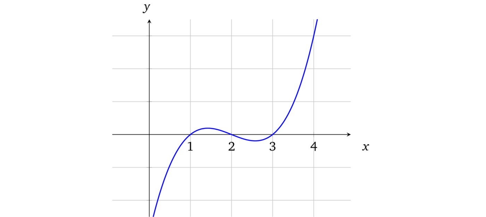
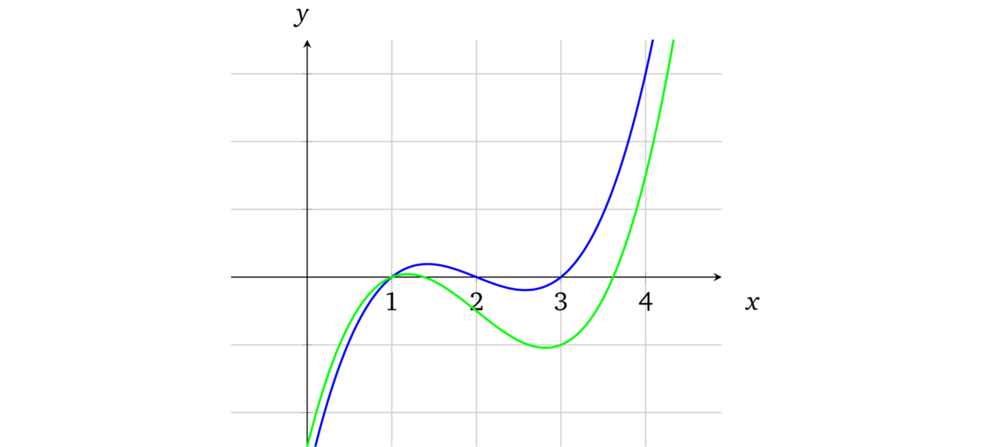
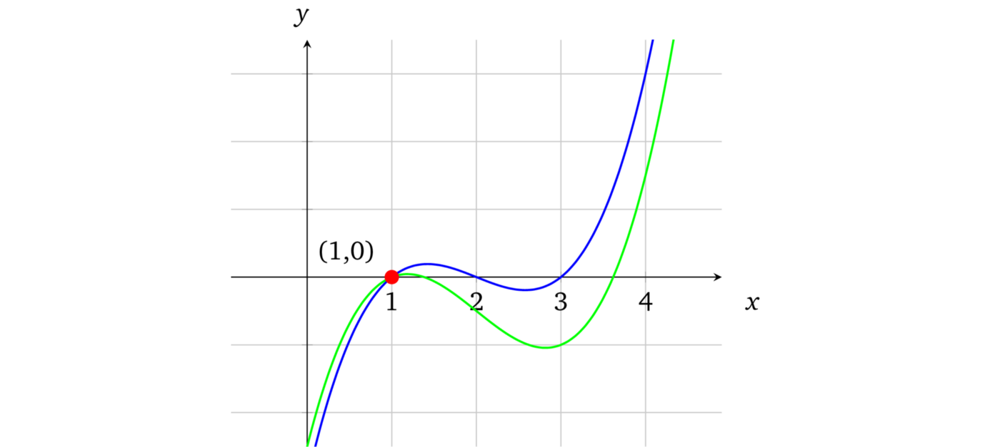

证明的媒介
这里我们先不去管零知识、非交互性其形式和适用性这些概念，就从尝试证明一些简单的东西开始。
想象一下我们有一个长度为 10 的位数组，现在要向验证者（例如程序）证明这样一个陈述：所有的位都被设置成了 1（即我们知道一个每个元素都等于 1 的数组）。
$$b = [\ \boxed{?}, \boxed{?}, \boxed{?}, \boxed{?}, \boxed{?}, \boxed{?}, \boxed{?}, \boxed{?}, \boxed{?}, \boxed{?}\ ]$$
验证者一次只能检查（也就是读取）一位。为了验证这个陈述，我们以某种任意的顺序读取元素并检查其是否确实等于 1。如果第一次抽样检查的结果是 1，就设置陈述的可信度为 \(\displaystyle \frac{1}{10} = 10%\)，否则，如果等于 0，就说明陈述是错误的。验证者继续进行下一轮验证，直到获得足够的可信度为止。假如在一些场景下要信任证明者需要至少 50% 的可信度，那就意味着必须执行 5 次校验。但假如在其他一些场景下需要 95% 的可信度，就需要检查所有的元素。很明显这个证明协议的缺点是必须要根据元素的数量进行检查，如果我们处理数百万个元素的数组，这么做是不现实的。
现在我们来看一下由数学方程式表示的多项式，它可以被画成坐标系上的一条曲线：

上面的曲线对应多项式：\(f(x) = x^3 -6x^2 + 11x - 6\)。多项式的阶数取决于 \(x\) 的最大指数，当前多项式的阶数是 3。
多项式有一个非常好的特性，就是如果我们有两个阶为 \(d\) 的不相等多项式，它们相交的点数不会超过 \(d\)。例如，稍微修改一下原来的多项式为 \(x^3 - 6x^2 + \mathbf{10}x - \mathbf{5}\) 并在图上用绿色标出：

这一点微小的修改就产生了变化很大的曲线。事实上，我们不可能找到两条不同的曲线，它们会在某段区域内重合（它们只会相交于一些点）。
这是从找多项式共同点的方法中得出的性质。如果要找到两个多项式的交点，就要先令它们相等。例如，要找到多项式与 \(x\) 轴的交点（即 \(f(x) = 0\)），我们就要令 \(x^3 - 6x^2 + 11x - 6 = 0\)，等式的解就是共同点：\(x = 1\)、\(x = 2\) 和 \(x = 3\)。在上面图中也可以很清晰地看出这些解，也就是图上蓝色曲线和 \(x\) 轴相交的地方。
同样，我们也可以令上文中原始的多项式和修改后的多项式相等，找到它们的交点。
$$x^3 - 6x^2 + 11x - 6 = x^3 - 6x^2 + \mathbf{10}x - \mathbf{5}$$
$$x - 1 = 0$$
多项式化简后的结果阶数为 1，它有一个很明显的解 \(x = 1\)。因此这两个多项式有一个交点。

任意一个由阶数为 \(d\) 的多项式组成的等式，最后都会被化简为另外一个阶数至多为 \(d\) 的多项式，这是因为等式中没有能用来构造更高阶数的乘法。例如：\(5x^3 + 7x^2 - x + 2 = 3x^3 - x^2 + 2x - 5\)，化简为 \(2x^3 + 8x^2 - 3x + 7 = 0\)。另外代数的基本原理也告诉我们，对于一个阶数为 \(d\) 的多项式至多有 \(d\) 个解（3.2 节将对此进行详细介绍），因此也就至多有 \(d\) 个共同点。
所以我们可以得出结论，任何多项式在任意点的计算结果（更多关于多项式求值可以参考：[Pik13]）都可以看做是其唯一身份的表示。我们来计算一下当 \(x = 10\) 时，示例多项式的结果。
$$ x^3 - 6x^2 + 11x - 6 = 504 $$
$$ x^3 - 6x^2 + 10x - 5 = 495 $$
事实上，在 \(x\) 可以选择的所有值中，至多只有三个值能够使这些多项式相等，其他的值都是不相等的。
这也是为什么如果一个证明者声称他知道一些验证者也知道的多项式（无论多项式的阶数有多大）时，他们就可以按照一个简单的协议去验证：
- 验证者选择一个随机值 \(x\) 并在本地计算多项式结果
- 验证者将 \(x\) 值提供给证明者，并让他计算相关的多项式结果
- 证明者代入 \(x\) 到多项式计算并将结果提供给验证者
- 验证者检查本地的计算结果和证明者的计算结果是否相等，如果相等就说明证明者的陈述具有较高的可信度
例如，我们把 \(x\) 的取值范围定在 1 到 \(10^{77}\)，那么计算结果不同的点的数量就有 \(10^{77} - d\) 个。因而 \(x\) 偶然「撞到」这 \(d\) 个结果相同的点中任意一个的概率就等于：\(\displaystyle \frac{d}{10^{77}}\)（几乎可以认为是不可能）。
注：与低效的位检查协议相比，新的协议只需要一轮验证就可以让声明具有非常高的可信度（如果假设 \(d\) 远小于其取值范围的上限，就几乎是 \(100%\) 了）
这也是为什么即使可能存在其他的证明媒介，多项式依然是 zk-SNARK 相对核心的部分。
译者注：这一节告诉了我们多项式的一个重要性质：我们不可能找到共享连续段的两条不相等曲线，任何多项式在任意点的计算结果都可以看做是其唯一身份的标识。也就是说只要能证明知道某个随机点对应的多项式上的值就可以证明知道这个多项式（只有知道了多项式，才能算出这个点对应的值），这个性质是下面所有证明的核心。
这就是 Schwartz–Zippel 定理，它可以扩展到多变量多项式，即在一个多维空间内形成的一个曲面。这个定理会在多个零知识证明方案的证明中反复出现。